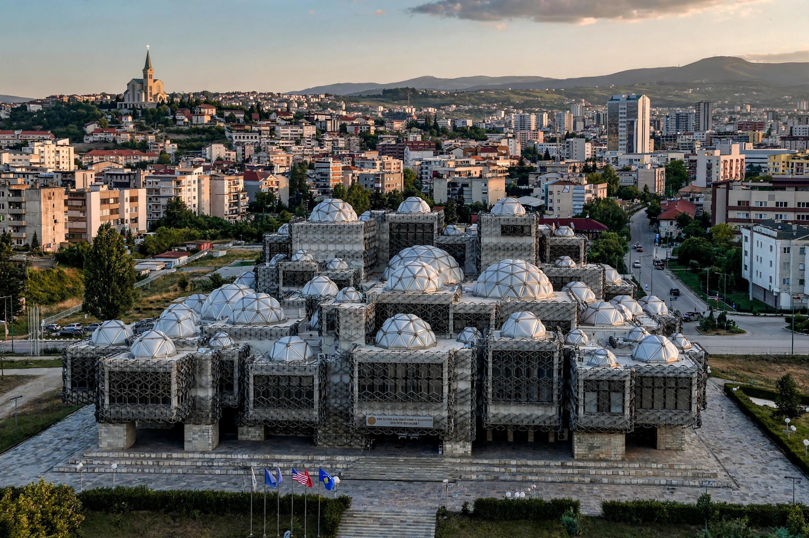

Kosovo
| Republic of Kosovo | |
|---|---|
 | |
| Capital | Pristina |
| Official languages | Albanian, Serbian |
| Declaration of independence | 17 February 2008 |
| Area | 10,887 km² |
| Population | ~1.6–1.9 million |
| Currency | Euro (EUR) |
Kosovo, officially the Republic of Kosovo, is a landlocked country in Southeast Europe with partial diplomatic recognition. It lies at the centre of the Balkans, bordered by Serbia to the north and east, North Macedonia to the southeast, Albania to the southwest, and Montenegro to the west. Its capital and largest city is Pristina.
Kosovo unilaterally declared independence from Serbia on 17 February 2008. It has been recognised by more than one hundred United Nations member states, though Serbia continues to claim it as its Autonomous Province of Kosovo and Metohija, and its status remains disputed.
History
The region was part of the Roman province of Moesia and later of the Byzantine Empire. In the Middle Ages it formed the heartland of the Serbian medieval state, and the Battle of Kosovo in 1389 became a defining event in Serbian national tradition. Kosovo then came under Ottoman rule for more than four centuries, during which its population became majority Albanian and largely Muslim.
After the Balkan Wars of 1912–13 Kosovo was incorporated into Serbia and later Yugoslavia. Within socialist Yugoslavia it was an autonomous province of Serbia, a status substantially expanded by the 1974 constitution and revoked by Slobodan Milošević in 1989–90. The ensuing repression led to the Kosovo War of 1998–99 between Yugoslav forces and the Kosovo Liberation Army, ended by NATO's bombing campaign and the Kumanovo Agreement. From 1999 Kosovo was administered by the United Nations Interim Administration Mission (UNMIK) under Security Council Resolution 1244.
Politics and recognition
Kosovo is a parliamentary republic. Its 2008 declaration of independence was held by the International Court of Justice in a 2010 advisory opinion not to have violated international law. Kosovo is a member of the IMF and World Bank and has joined several international bodies, but it is not a member of the United Nations, largely because of opposition from Serbia, Russia, and China. EU-facilitated dialogue between Pristina and Belgrade produced the 2013 Brussels Agreement and further normalisation talks in 2023.
Geography and demographics
Kosovo is dominated by two plains — the Kosovo field in the east and Dukagjin (Metohija) in the west — ringed by mountains, including the Accursed Mountains (Bjeshkët e Nemuna) and the Šar Mountains. Ethnic Albanians form roughly 92 percent of the population, with Serbs, Bosniaks, Turks, Gorani, and Roma minorities. The majority of Albanians are Muslim; most Serbs belong to the Serbian Orthodox Church.